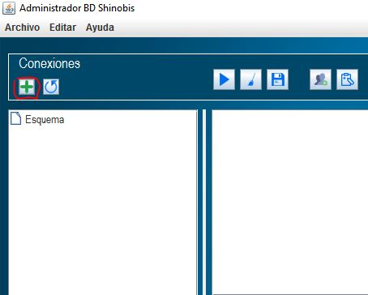
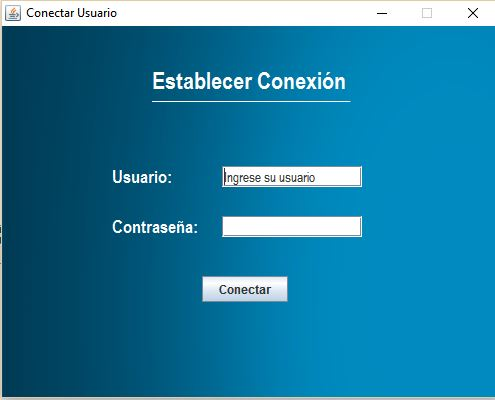
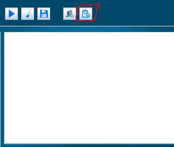
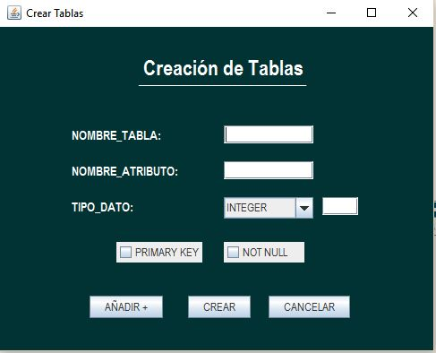
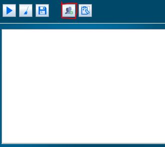
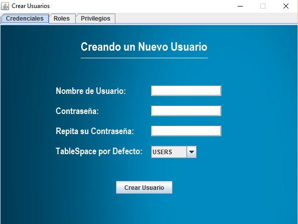
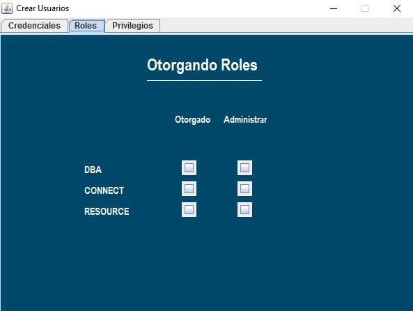
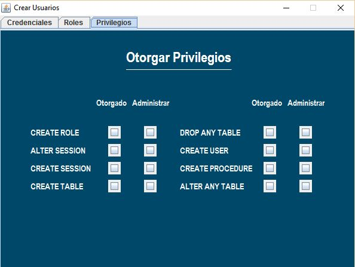
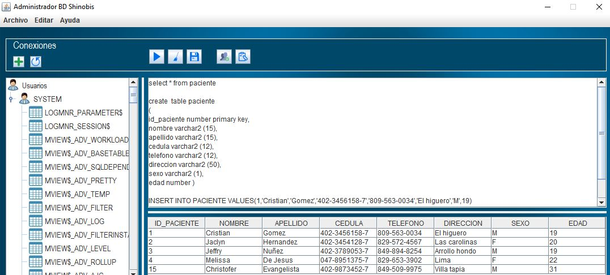

Ejemplos de uso
Login de Usuario
Para crear la conexion de usuario es necesario abrir el programa AdministradorDB, en la parte superior donde se encuentran los botones. Se debe dar click en el boton +

Aparecera una ventana de login para poder utilizar dicho programa.

Si ingresa el nombre de usuario y la contraseña. Luego se procede a dar click en el boton de conectar
Nota:
Si al momento de iniciar sesion sucede algun error es porque ese usuario no existe en la base de datos,
se recomienda que contacte con el administrador de la base de datos del mismo.
Creacion de tablas
Para crear una tabla, debes ir a la parte superior derecha donde encontraras el siguiente boton

En la pantalla de creacion de tabla debes especificar el : nombre de la tabla, atributo asi como las diferentes caracteristicas que lo definen

Se debe dar click en el boton anadir+ para poder anadir el atributo a la tabla y posteriormente en el boton de crear para crear dicha tabla. Para seguir añadiendo mas atributos se de click en el boton añadir.
Nota:
Para crear una nueva tabla se debe cerrar la pantalla de creacion de tablas y abrirla nuevamente
Creacion de usuarios
Para Crear un usuario debes ir a la parte superior donde se encontraras el siguiente boton

En la pantalla de creacion de usuario se escribe el nombre de usuario asi como la contraseñas del mismo. Tambien se debe otorgar roles y privilegios al usuario que crea



Nota:
Debes tener en cuenta que si no tienes cierto privilegios en el usuario que te encuentras. No podras
otorgarles al usuario que creas privilegios con los que no cuentas
Area de las sentencias
En la area de las sentencias puedes ejecutar cualquier sentencia de select, create table o user, update, disponible en la base de datos

Nota:
Se debe tener en cuenta que cualquier error que pueda ser producido sera por un error en la sintaxis por lo cual se recomienda revisar las sentencias sql antes de ejecutarlas